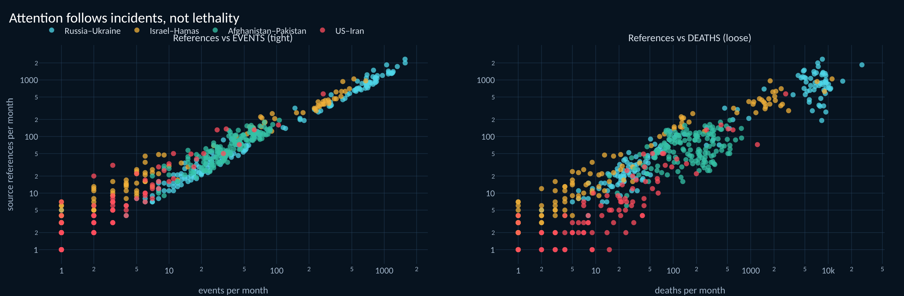
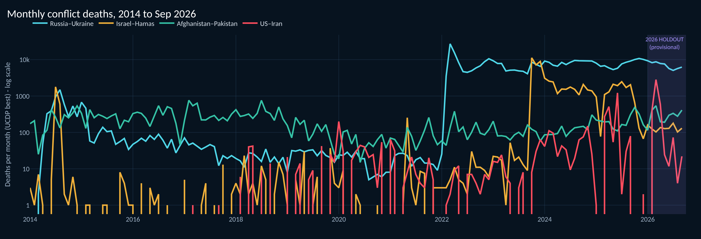
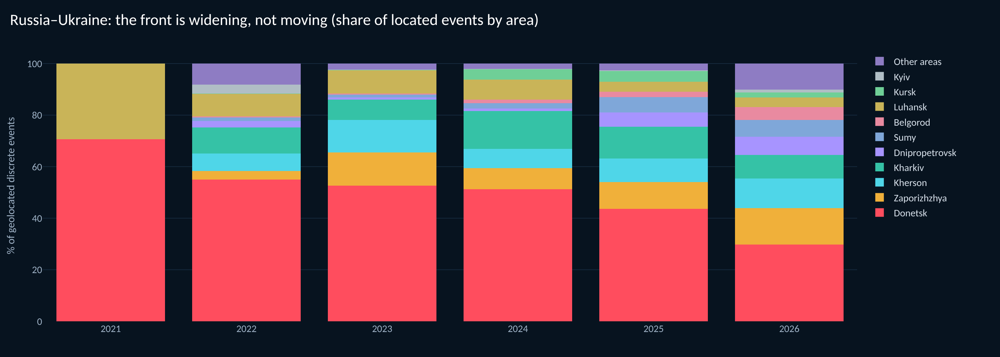
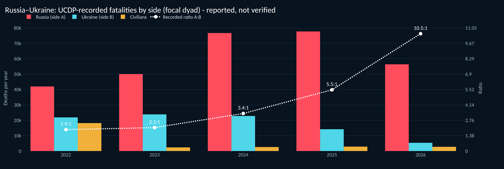
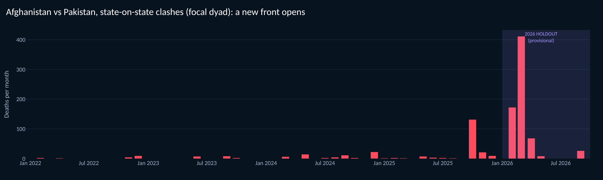
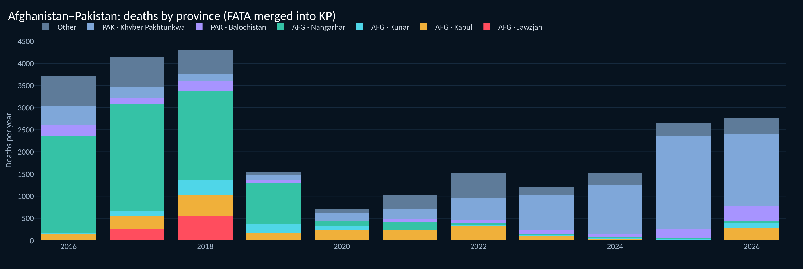
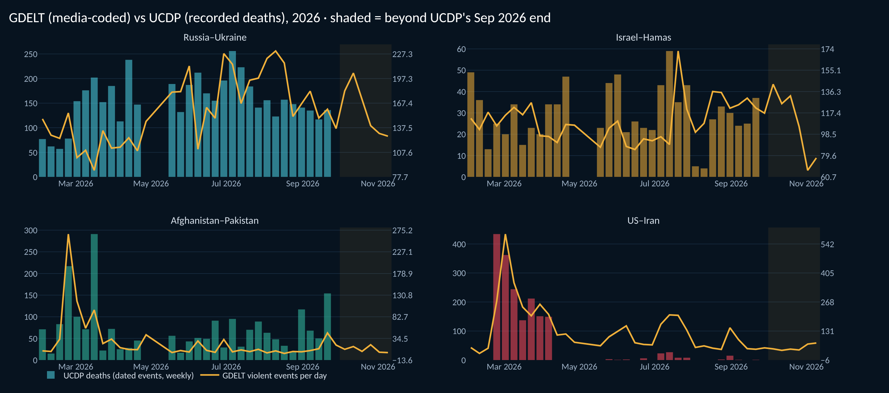
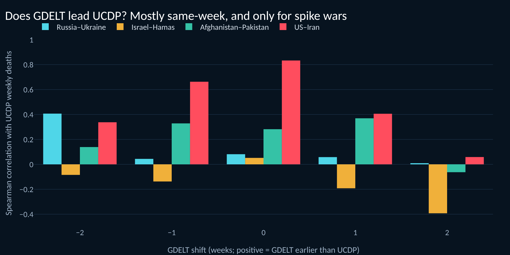
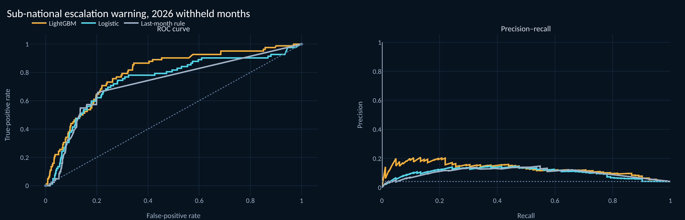
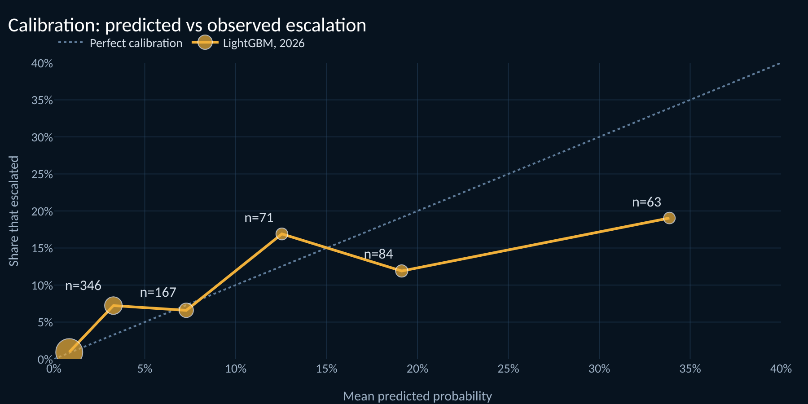

Recommendations in brief: task ISR on the monthly watch-list; keep Gulf NEO plans current while US–Iran is AMBER; treat the Af–Pak interstate dyad as a standing I&W indicator for the LoC; build Indian OSINT coverage of West Asia (§9).
Threat scorecard for Oct 2026, built only from model outputs (rules in §8):
| Conflict | Escalation risk | Oct 2026 forecast | 80% band | Trend vs 6 mo (%) | Hotspots | Top areas (probability) | Pts |
|---|---|---|---|---|---|---|---|
| Russia–Ukraine | RED | 6,780 | 3,316–16,708 | +7 | 0 | Chernihiv (15%); Dnipropetrovsk (14%); Sumy (14%) | 3 |
| Israel–Hamas | GREEN | 128 | 62–317 | -4 | 0 | Gaza Strip (14%); West Bank (11%); Haifa district (1%) | 1 |
| Afghanistan–Pakistan | AMBER | 318 | 155–786 | +12 | 3 | Kandahar (23%); Balochistan (21%); Kunar (21%) | 3 |
| US–Iran | AMBER | 26 | 12–66 | -78 | 1 | Hormozgan (16%); Khuzestan (12%); Kermanshah (9%) | 2 |
The brief asks teams to explore four conflicts, frame their own questions, and show verifiable findings with stated assumptions. For an audience of military officers we chose an operational framing: when and where will conflict deaths rise next, and what does that mean for the Indian Armed Forces and for humanitarian planning? We chose it over a purely descriptive study because a forecast can be scored against withheld data and turned into tasking.
| # | Question | Method | § |
|---|---|---|---|
| Q1 | How intense is each conflict, and how is it changing? | Monthly panels, tempo, lethality, seasonality | 5.1 |
| Q2 | How are the wars fought: attrition, front geography, spread? | Dyad/side analysis, located-event shares, theatre spread | 5.2 |
| Q3 | Can we forecast monthly deaths better than simple rules, on unseen 2026 data? | 7 models, walk-forward back-test, 2026 holdout, conformal intervals | 7 |
| Q4 | Can we warn which areas will escalate next month? | Sub-national classifier, watch-list precision | 8 |
| Q5 | What does it mean for India? | Exposure analysis plus labelled domain reasoning | 6 |
[Data] marks results computed from the competition files. [Domain] marks expert reasoning the files cannot prove.
Sources (official participant package). 61,055 UCDP event records (GED 26.1 for 2014–2025; provisional Candidate 26.01.26.09 for Jan–Sep 2026), 85,406 source references, UNHCR bilateral stocks (6,273 rows) and demographics (19,830), IDMC/UNRWA reference stocks (112) and World Bank context (1,764). The top-level files outside the official folder belong to another package and were not used.
36 documented checks, of which 23 found something to handle. No row is silently
dropped: every fix is logged, and raw values are kept beside corrected ones. The ten that matter most are below; all
23 are in Appendix A and outputs/tables/data_quality_log.csv.
| ID | Issue found | Rows | What we did |
|---|---|---|---|
| DQ05 | Out-of-order low/best/high estimates (low<=best<=high violated) | 692 | Raw values preserved |
| DQ07 | Event date range crosses a month boundary | 731 | Fatalities allocated across months in proportion to days in range (uniform-day disaggregation) instead of assigning everything to the start month |
| DQ10 | Provisional UCDP Candidate records (Jan-Sep 2026) | 4,644 | Flagged is_provisional |
| DQ13 | Administrative boundary change: FATA merged into Khyber Pakhtunkhwa (2018) | 602 | Harmonised FATA to 'Khyber Pakhtunkwa province' (post-merger boundary) for a stable sub-national panel; raw admin1_name retained |
| DQ14 | Blank admin1_name | 3,043 | Imputed category '(country-level / unspecified)' so the events remain in sub-national panels |
| DQ15 | Aggregate event records (event_clarity = 2) | 5,757 | Kept (they carry real deaths) and flagged; event COUNT features use clear events only |
| DQ23 | Publisher name variants (e.g. ITAR-TASS/Tass, UA Losses/UALosses) | 90 | Normalised 1,714 raw labels to 1,624 outlets (case, punctuation, prefix, alias map) |
| DQ24 | Same outlet + same date repeated within one event | 7,515 | Kept (README: references can repeat an outlet/date) but flagged; 'unique outlets' feature de-duplicates them |
| DQ29 | Unspecified sex/age cells ('_X') | 6,596 | Kept as an explicit 'Unspecified' level; shares computed over specified cells only and coverage reported alongside |
| DQ34 | Missing consumer_inflation_annual_pct | 124 | Within-economy linear interpolation + edge fill; 60 remain blank (economy has no value in any year) and are left missing |
Imputation rules. Blank country codes become INTL (waters/airspace) or XXX (ambiguous code 666); blank admin1
becomes an explicit "country-level" bucket, so those deaths are not lost. A dash in UNHCR "other protection" is nil and
becomes 0. World Bank gaps (36 GDP, 124 inflation values) are interpolated within each economy; because interpolation looks
at later years, these columns are kept out of the selected ensemble and classifier and appear only in benchmark and
ablation variants. Area-months with no event are true zeros.
A finding from cleaning: the fog of war is in the data [Data]. The share of Russia–Ukraine deaths with no sub-national location rose from 30% (2022) to 92% (2026), because most recent deaths come from country-level memorial and aggregate counts. We therefore measure front geography with located, discrete events.
Two monthly panels: 4 conflicts × 153 months and 222 sub-national area series × 153 months (zero-filled). Every feature is known at the end of the forecast-origin month.
| Family | Features | Military / analytic idea |
|---|---|---|
| Intensity memory | deaths in the last 1–12 months, 3/6/12-month averages, worst month in a year | War has inertia |
| Momentum | last 3 vs last 12 months, month-on-month change, dormancy streak | Escalation = short-term above long-term norm |
| Tempo and fog | events and references per month; (high − low)/best; share of aggregate records | Engagements vs lethality; degraded picture |
| Character | civilian, state-based, one-sided and focal-dyad shares | Battlefield vs punitive violence |
| Geography | active areas, concentration (Herfindahl), share outside the core theatre | Front widening, horizontal escalation |
| Seasonality | calendar month, same month last year | Campaign seasons |
| Hierarchy | whole-conflict and country tempo; area's share of its conflict | Areas inherit their war's tempo |
The ablation in §7.2 shows that a compact 18-feature subset generalises best at conflict level: with four series, 40 features over-fit. The richer set is used where data are plentiful (222 area series).

| Russia–Ukraine | Israel–Hamas | Afghanistan–Pakistan | US–Iran | |
|---|---|---|---|---|
| Recorded deaths 2014–Sep 2026 (low – high) | 447,452 (271k – 783k) | 67,933 (64k – 72k) | 31,082 (29k – 40k) | 7,929 (6.9k – 8.7k) |
| Peak month | Mar 2022 (27,245) | Oct 2023 (11,211) | Feb 2017 (762) | Mar 2026 (2,825) |
| Deaths Jan–Sep 2026 | 64,453 | 1,191 | 2,767 | 3,965 |
| Civilian share · countries with deaths | 7% · 4 | 49% · 9 | 20% · 2 | 36% · 15 |
Four threat signatures: RU–UA is sustained attrition (4–11k deaths a month since 2023), US–Iran is spikes (coalition strikes, then direct war in Feb–Mar 2026), Af–Pak is a creep (rising since 2021) and Israel–Hamas is de-escalating (about 130 a month in 2026). Campaign seasons: RU–UA deaths run +35% (May) and +25% (Jul) against trend, and -27% (Dec) and -34% (Jan); Af–Pak peaks in Sep–Oct. So what: one warning rule cannot fit all four, so we forecast level, trend and spread separately.
Front geography: widening, not moving [Data]. Donetsk's share of located events fell from 55% (2022) to 30% (2026) while Zaporizhzhia (14%), Dnipropetrovsk (7%), Sumy (6%) and Russia's Belgorod (5%) grew. Deaths recorded inside Russia peaked at 10,358 in 2024. So what [Domain]: a wide, static front rewards long-range fires, counter-drone, EW and logistics depth.
Recorded attrition by side [Data, with caveat]. In the RU–UA focal dyad UCDP records 41,929 Russian vs 21,844 Ukrainian fatalities in 2022 (1.9:1), widening to 10.5:1 in 2026. In the 2026 US–Iran war, Iran's recorded losses were 1,274 against 11 for the Israel–US coalition. These are recorded figures: Ukrainian memorial databases document Russian losses more fully than the reverse, so the ratio is an upper bound of reporting, not a verified exchange ratio.


Afghanistan–Pakistan: a second front opens [Data]. Violence has concentrated in Khyber Pakhtunkhwa (TTP) and Balochistan and has risen every year since 2021. Since Oct 2025 the two states clash directly (131 deaths in Oct 2025; 172, 411 and 68 in Feb–Apr 2026). So what [Domain]: a Pakistan Army committed in the west has less capacity in the east, or more incentive for diversionary LoC activity. Watch the western front more closely, not less.


Horizontal escalation [Data]. The US–Iran case spread from 4 countries (2025) to 14 (2026), including five Gulf states and Sri Lankan waters. Israel–Hamas reached Qatar in Sep 2025.
We regress monthly source references on events and deaths (log, conflict fixed effects). The standardised residual is the Attention Gap Index (AGI): above 0 is over-reported, below 0 is "forgotten" violence. References scale with incidents (elasticity 0.96), not lethality (0.01); R² = 0.96. Per 100 deaths there are 150 references for Israel–Hamas, 54 for RU–UA, 40 for Af–Pak and 35 for US–Iran. The AGI does not lead next month's escalation (coefficient -0.047, p = 0.50). In UCDP's record, Indian outlets (mainly PTI) appear in 17% of Af–Pak events and almost none elsewhere: the record of West Asia rests on non-Indian wires. So what: do not build warning on media volume.
Ukraine, end-2025: about 5.2M refugees abroad and 3.7M IDPs; 72% of refugees with recorded sex and age are women or children. Afghanistan: 63% women and children, 10% under five. Palestine: 2.0M IDPs (IDMC); UNRWA registrations (2.5M) are a separate series and are never summed. Country-year deaths explain little of the change in displaced stocks (Spearman 0.10, p = 0.18). So what: trigger HADR planning on onset and spread (our escalation flags), not death tolls, and stock paediatric and maternal supplies.

The competition package also contains GDELT, about 5.4 GB of machine-coded news events. We reduced
541,275 dyad-coded events (RU↔UA, ISR↔PSE/Hamas, AFG↔PAK, USA↔IRN; 2026-02-01 to
2026-11-12, gap 2026-05-01 to 2026-05-16) to daily, weekly and monthly rates per covered day
(data/gdelt/, script included). GDELT counts reports, not incidents, so we compare it with UCDP and never join
event to event. This is a separate analysis: it does not change any submitted model number.
| Conflict | Month | Violent events / day | Change vs previous month | Threats / day | Signal | GDELT tracks UCDP here? |
|---|---|---|---|---|---|---|
| Afghanistan–Pakistan | Oct 2026 | 15 | −9% | 2 | STEADY | Yes |
| Afghanistan–Pakistan | 1–12 Nov 2026 | 4 | −75% | 3 | FALLING | Yes |
| Israel–Hamas | Oct 2026 | 125 | 0% | 14 | STEADY | No |
| Israel–Hamas | 1–12 Nov 2026 | 70 | −44% | 7 | FALLING | No |
| Russia–Ukraine | Oct 2026 | 171 | +5% | 42 | STEADY | No |
| Russia–Ukraine | 1–12 Nov 2026 | 129 | −24% | 26 | STEADY | No |
| US–Iran | Oct 2026 | 44 | −43% | 24 | FALLING | Yes |
| US–Iran | 1–12 Nov 2026 | 70 | +59% | 52 | RISING | Yes |
So what: in Oct 2026 GDELT was steady for three wars and quieter for US–Iran, which is consistent with the frozen Oct forecasts. US–Iran is the one to watch: in the first 12 days of Nov its violent-event rate rose +59% and threats (52 a day) roughly doubled. With the scorecard at AMBER and GDELT tracking UCDP in this war, that justifies keeping Gulf NEO plans current (§9). Falls in early Nov for Af–Pak and Israel–Hamas rest on 12 days and are not yet a trend.


| Theatre | What the data show [Data] | What it means for India [Domain] |
|---|---|---|
| Afghanistan–Pakistan | KP deaths up every year since 2021; state-on-state clashes since Oct 2025; deaths in Pakistan-held areas adjoining India/LoC rose from 2 (2022) to 52 (2025) | Pakistan Army committed in the west: risk of diversionary LoC activity, infiltration and TTP/IS-K spill-over |
| US–Iran / Gulf | 14 countries hit in 2026, incl. 5 Gulf states (25 events, 37 deaths); 299 deaths on Iran's Hormuz/Chabahar coast; 945 deaths in Yemen in 2025 | About 9M Indians in the Gulf need NEO contingency (cf. Op Ganga, Kaveri, Ajay); crude and LPG transit Hormuz; Chabahar and INSTC lie in the strike zone |
| Indian Ocean | 104 killed in one strike off Sri Lanka's west coast, 4 Mar 2026 | The war entered India's maritime neighbourhood: IFC-IOR and Navy need a belligerent-movement picture |
| Russia–Ukraine | 4–11k deaths a month; front widening; extreme recorded attrition asymmetry | Spares for legacy Russian platforms at risk; drone, counter-drone and EW lessons |
| Israel–Hamas | De-escalated to about 130 a month in 2026 | A key supplier of UAVs, missiles and sensors is at war: hold buffer stocks |
| Refugees in India | Afghans 16,247 (2021) → 8,377 (2025); Russian asylum seekers 5 (2015) → 329 (2025) | Small numbers; monitor the rising Russian flow |
Models are fitted once on data up to December Y − 1, frozen, and scored on Jan–Sep of year Y. Track A
(operational) is 1 month ahead, rolling, with no refitting. Track B (strategic) is 1–9 months ahead from a single
December origin. Back-test folds 2022–2025 drive every design choice (ablation, ensemble membership, interval
calibration). 2026 is the withheld test set, scored once. RMSLE is the selection metric because the four series differ
by three orders of magnitude; MAE, RMSE, MAPE, sMAPE and MASE are in outputs/tables/forecast_scores.csv (definitions in
Appendix B). Candidates: naive, seasonal naive and 3-month mean (benchmarks); ETS (damped Holt, log); SARIMA (AIC-selected,
log); LightGBM-Δ (one global model that learns the change in log deaths from 18 features); bottom-up Tweedie LightGBM
(222 areas summed). Ensemble = Moving average + ETS + LightGBM-Δ global, a log-space mean.
| LightGBM variant | RMSLE Track A (1-step) | RMSLE Track B (1-9 step) |
|---|---|---|
| A. Level target, L2, full features (default ML) | 1.232 | 1.197 |
| B. Δ target, L2, full features | 0.993 | 1.260 |
| C. Δ target, L2, full features, regularised | 0.955 | 1.283 |
| D. Δ target, Huber, compact features | 0.896 | 1.143 |
| E. Δ target, L1, compact features (selected) | 0.902 | 1.128 |
| F. Tweedie on raw counts, full features | 1.331 | 1.263 |
A plain LightGBM on the log level is the worst option. Trees cannot predict beyond the range seen in training, so a model fitted before 2022 can never forecast the invasion. Predicting the change removes that ceiling, and a compact feature set with a robust L1 loss generalises best. Deep learning was not used: four series of 153 months are far too few.
RMSLE, lower is better (A = 1 month ahead; B = 1–9 months from December)
| model | A · Back-test 2022–25 | A · 2026 holdout | B · Back-test 2022–25 | B · 2026 holdout |
|---|---|---|---|---|
| Ensemble (log-space mean, members chosen on back-test) | 0.839 | 0.845 | 1.142 | 1.169 |
| ETS (damped Holt, log) | 0.867 | 0.897 | 1.196 | 1.062 |
| LightGBM-Δ global (change in log deaths, L1) | 0.902 | 0.908 | 1.128 | 1.249 |
| Moving average (3 months) | 0.907 | 1.014 | 1.182 | 1.464 |
| Naive (last month) | 0.928 | 0.961 | 1.311 | 1.372 |
| SARIMA (AIC-selected, log) | 1.065 | 0.844 | 1.532 | 1.042 |
| LightGBM bottom-up, Tweedie (sub-national, summed) | 1.293 | 0.933 | 1.208 | 1.003 |
| Seasonal naive (same month last year) | 1.798 | 1.579 | 1.798 | 1.579 |
1 month ahead on 2026: error against the "no-change" rule, with 90% moving-block bootstrap intervals and one-sided Diebold–Mariano (DM) tests
| MAE ensemble | MAE naive | Reduction (90% interval) | DM p | 80% band coverage | |
|---|---|---|---|---|---|
| Russia–Ukraine | 563 | 805 | 30% (−3% to 39%) | 0.11 | 100% |
| Israel–Hamas | 17 | 39 | 55% (27% to 66%) | 0.02 | 100% |
| Afghanistan–Pakistan | 123 | 128 | 4% (−24% to 29%) | 0.44 | 100% |
| US–Iran | 445 | 643 | 31% (−10% to 68%) | 0.19 | 22% |
| Pooled | 29% (2% to 41%) | 0.05 | 81% |
How strong is the evidence? The pooled gain of 29% is positive in 98% of bootstrap resamples, and the interval excludes zero for the pool and for Israel–Hamas. It does not exclude zero for Af–Pak, RU–UA and US–Iran. With nine test months, a Diebold–Mariano test is significant at 5% only for Israel–Hamas (pooled p = 0.05). Across all five folds (45 months) the pooled gain is 13% (−3% to 27%). We therefore claim a consistent, practically useful gain, not a statistically proven one. On Track B, SARIMA and the bottom-up LightGBM edged the ensemble in 2026, though not in the back-test; we report this rather than re-select on the test set.


Forward forecast, deaths per month with 80% band (refitted on all data to Sep 2026):
| Conflict | Oct 2026 | Nov 2026 | Dec 2026 |
|---|---|---|---|
| Russia–Ukraine | 6,780 (3,316–16,708) | 6,765 (3,071–30,447) | 6,735 (3,058–30,316) |
| Israel–Hamas | 128 (62–317) | 129 (58–583) | 123 (55–557) |
| Afghanistan–Pakistan | 318 (155–786) | 316 (143–1,428) | 291 (132–1,313) |
| US–Iran | 26 (12–66) | 26 (11–122) | 24 (11–114) |
An area escalates next month if its deaths are ≥ 10 and ≥ 1.5 × its trailing 3-month mean (about 4% of area-months). A regularised LightGBM classifier uses 19 features (own intensity and momentum, conflict-wide tempo and spread, country momentum, season), is trained on months up to Dec Y − 1 and tested on Jan–Sep Y for 2023–2026.
| 2026 withheld | ROC-AUC | PR-AUC | Brier | Top-10 precision | Top-20 recall |
|---|---|---|---|---|---|
| LightGBM classifier (90% interval) | 0.795 (0.75–0.83) | 0.133 (0.10–0.18) | 0.038 | 14.4% (9%–21%) | 32.7% |
| Logistic regression (5 signals) | 0.745 | 0.103 | 0.041 | 6.7% | 34.6% |
| Rule: last month's deadliest | 0.727 | 0.088 | 0.049 | 4.4% | 21.8% |
| Base rate | 0.041 | 4.1% |
The top-10 list is 3.5× better than random and 3.3× better than the rule of thumb (intervals: areas resampled). The leading signals are the area's own smoothed intensity, its country's intensity and momentum and the whole conflict's momentum and spread: escalation is contagious within a theatre. Calibration: the scores rank areas well but run high at the top end. Areas scored 15% or more (mean 25%) escalated 15% of the time in 2026. Use the watch-list as a ranking, not as literal odds.


Watch-list for Oct 2026. Kandahar, Balochistan and Kunar (Af–Pak, 21–23%), then Hormozgan (US–Iran, 16%) and Chernihiv, Dnipropetrovsk and Sumy (RU–UA, 14–15%). The dashboard lists the top 20.
Scorecard rules. Points: intensity (forecast ≥ 1,000 → 2; ≥ 100 → 1); trend vs the last 6 months (≥ +20% → +1; ≤ −20% → −1); hotspots (areas scored ≥ 15%: ≥ 3 → 2; ≥ 1 → 1); spread (more countries than last year → 1); volatility (a ≥ 1,000-death month in the last year → 1). RED = forecast ≥ 1,000 or ≥ 5 points; AMBER = 2–4; GREEN ≤ 1. The rating measures escalation risk relative to the conflict's own recent level.
What-if and new data. The dashboard re-runs the ensemble on a modified history: a +30% surge in Af–Pak deaths over
three months raises the Oct 2026 forecast by about 13% (318 → 359). python score_holdout.py --events <file> scores the
forecasts and watch-list frozen in this submission against any new month of events, without refitting.
| Line | Action | Triggering finding [Data] | Lead [Domain] | When |
|---|---|---|---|---|
| SENSE | Task ISR and analysts on the monthly sub-national watch-list; track active sectors and countries hit | Top-10 list 3.5× random (§8) | DIA / Service intelligence | Now |
| SENSE | Build Indian OSINT coverage of the Gulf, Iran and Red Sea; run a GDELT feed as a nowcast past UCDP's lag for spike wars | Indian outlets in 17% of Af–Pak events, about 0% elsewhere; GDELT tracks UCDP for US–Iran (§5.3, §5.5) | DIA / MEA | 90 days |
| WARN | Adopt the Af–Pak interstate dyad and KP/Balochistan scores as standing LoC I&W indicators | State clashes since Oct 2025; 3 hotspots (§5.2, §8) | Northern / Western Comds | Now |
| WARN | Publish the scorecard monthly; escalate any move to RED or rise in countries hit | US–Iran 4 → 14 countries with no build-up (§5.2) | HQ IDS | 90 days |
| SHIELD | Keep Gulf NEO plans current while US–Iran is AMBER; sealift/airlift options | 5 Gulf states struck, 25 events (§6) | HQ IDS / Navy / IAF / MEA | Now |
| SHIELD | Belligerent-movement picture for the IOR | 104 killed off Sri Lanka, 4 Mar 2026 (§6) | Navy / IFC-IOR | 90 days |
| SUSTAIN | Buffer and indigenise critical spares for Russian- and Israeli-origin platforms | RU–UA 4–11k deaths a month, no decline forecast (§7) | MoD / DPSUs | 6–12 months |
| SUSTAIN | HADR kits weighted to women, children and under-fives; trigger on escalation flags | 72% of Ukrainian refugees are women or children (§5.4) | HQ IDS / NDMA | 6–12 months |
Tools. Python 3.13: pandas, NumPy, SciPy, statsmodels (ETS, SARIMA), LightGBM (forecaster, classifier, TreeSHAP), scikit-learn, Plotly and Streamlit (dashboard), python-pptx. AI tools used: Claude (Anthropic), as a coding, drafting and review assistant. It helped write and debug the pipeline, dashboard, report and slide code, and reviewed the submission against the marking scheme. No number was typed in or generated by an AI tool: every figure is computed by the code in this repository from the issued dataset and can be reproduced with one command. The team framed the questions, checked the analysis and owns the findings and recommendations.
Reproduce. pip install -r requirements-dev.txt, then python run_pipeline.py (about 4 min: clean → features →
insights → models → evidence checks → figures), streamlit run app/app.py, python score_holdout.py --selftest. Seeds
are fixed (random_state = 42). Every number here is read from outputs/tables/; the run ID CW-8694DE2B is a hash of the
result tables and is printed on this report, the deck and the dashboard, so all three can be matched. Live:
conflictmonitor2026.streamlit.app.
| id | table | check | rows_affected | pct_affected | action |
|---|---|---|---|---|---|
| DQ05 | conflict_events | Out-of-order low/best/high estimates (low<=best<=high violated) | 692 | 1.13 | Raw values preserved. Corrected copies deaths_low_c = min(low,best,high) and deaths_high_c = max(low,best,high); row flagged flag_estimate_order. |
| DQ07 | conflict_events | Event date range crosses a month boundary | 731 | 1.20 | Fatalities allocated across months in proportion to days in range (uniform-day disaggregation) instead of assigning everything to the start month. |
| DQ08 | conflict_events | Date range extends beyond the 30 Sep 2026 extract window | 1 | 0.00 | Kept. Only the in-window share of deaths enters the monthly panel; out-of-window share is logged. |
| DQ09 | conflict_events | Low date precision (code 4-5: month or longer) | 792 | 1.30 | Kept and flagged. Used as a feature (share of imprecise events = reporting fog). |
| DQ10 | conflict_events | Provisional UCDP Candidate records (Jan-Sep 2026) | 4,644 | 7.61 | Flagged is_provisional. 2026 is used ONLY as the withheld test set, never for training the evaluated models. |
| DQ11 | conflict_events | UCDP coding status under review ('Check ...') | 176 | 0.29 | Kept and flagged flag_coding_check; sensitivity analysis excludes them. |
| DQ12 | conflict_events | Blank location_iso3 (code 666 ambiguous / international waters or airspace) | 38 | 0.06 | Imputed join key: 'INTL' for international waters/airspace (precision 7), 'XXX' for ambiguous code 666. Source labels retained. |
| DQ13 | conflict_events | Administrative boundary change: FATA merged into Khyber Pakhtunkhwa (2018) | 602 | 0.99 | Harmonised FATA to 'Khyber Pakhtunkwa province' (post-merger boundary) for a stable sub-national panel; raw admin1_name retained. |
| DQ14 | conflict_events | Blank admin1_name | 3,043 | 4.98 | Imputed category '(country-level / unspecified)' so the events remain in sub-national panels. |
| DQ15 | conflict_events | Aggregate event records (event_clarity = 2) | 5,757 | 9.43 | Kept (they carry real deaths) and flagged; event COUNT features use clear events only. |
| DQ16 | conflict_events | Extreme fatality records (> 99.9th pct = 1225) | 62 | 0.10 | Kept: verified as multi-day aggregates (mostly RU-UA front-wide monthly totals). Models use log1p target and robust (MAE-based) evaluation. |
| DQ17 | conflict_events | Zero-fatality events (deaths_best = 0) | 1,294 | 2.12 | Kept: UCDP retains events whose best estimate is 0 if low/high > 0 or in an active dyad. |
| DQ18 | conflict_events | Monthly allocation outside panel window (after Sep 2026) | 1 | 0.00 | Dropped allocation rows after the window (0.5 deaths, i.e. the October share of a September-start record). |
| DQ22 | event_sources | Publisher labels with spreadsheet 'Source:' prefix | 870 | 1.02 | Prefix stripped in publisher_norm. |
| DQ23 | event_sources | Publisher name variants (e.g. ITAR-TASS/Tass, UA Losses/UALosses) | 90 | 5.25 | Normalised 1,714 raw labels to 1,624 outlets (case, punctuation, prefix, alias map). |
| DQ24 | event_sources | Same outlet + same date repeated within one event | 7,515 | 8.80 | Kept (README: references can repeat an outlet/date) but flagged; 'unique outlets' feature de-duplicates them. |
| DQ25 | event_sources | Reference published before the event's end date | 253 | 0.30 | Kept (README: references may precede an event, e.g. aggregate updates). Lag clipped at 0 for reporting-latency statistics. |
| DQ27 | bilateral_displacement_stocks | Blank other_international_protection (source dash) | 6,269 | 99.94 | Imputed 0: in UNHCR tables a dash denotes nil / not applicable (documented in data dictionary). Flag retained. |
| DQ29 | unhcr_demographics | Unspecified sex/age cells ('_X') | 6,596 | 33.26 | Kept as an explicit 'Unspecified' level; shares computed over specified cells only and coverage reported alongside. |
| DQ30 | displacement_reference_stocks | Two non-comparable series (IDMC IDPs vs UNRWA registrations) | 112 | 100.00 | series_code kept as a key on every summary; the series are never summed. |
| DQ31 | displacement_reference_stocks | Unknown reporting area (UNK) | 1 | 0.89 | Kept in series totals, excluded from country joins. |
| DQ33 | country_year_context | Missing gdp_growth_annual_pct | 36 | 2.04 | Within-economy linear interpolation + edge fill; 12 remain blank (economy has no value in any year) and are left missing. |
| DQ34 | country_year_context | Missing consumer_inflation_annual_pct | 124 | 7.03 | Within-economy linear interpolation + edge fill; 60 remain blank (economy has no value in any year) and are left missing. |
MAE = mean |error|; RMSE = √mean(error²); MAPE = mean |error|/actual over months with actual > 0; sMAPE = mean 2|e|/(|y|+|ŷ|); MASE = MAE / in-sample MAE of the one-step naive; RMSLE = √mean(log(1+ŷ) − log(1+y))²; coverage = share of actuals inside the interval; ROC-AUC/PR-AUC for ranking; Brier = mean squared probability error; precision@10 = share of each month's top-10 areas that escalated. Bootstrap: 5,000 moving-block resamples of months (block 3; all conflicts resampled together for the pool), 5th–95th percentiles. Diebold–Mariano: absolute-error loss, one-sided (ensemble better), Harvey–Leybourne–Newbold small-sample correction. Early-warning intervals: 1,000 resamples of areas. Calibration (2026, LightGBM):
| Predicted band | Area-months | Mean predicted | Escalated |
|---|---|---|---|
| (0, 0.02] | 1,267 | 0.8% | 0.9% |
| (0.02, 0.05] | 346 | 3.3% | 7.2% |
| (0.05, 0.1] | 167 | 7.3% | 6.6% |
| (0.1, 0.15] | 71 | 12.5% | 16.9% |
| (0.15, 0.25] | 84 | 19.1% | 11.9% |
| (0.25, 1.0] | 63 | 33.9% | 19.0% |